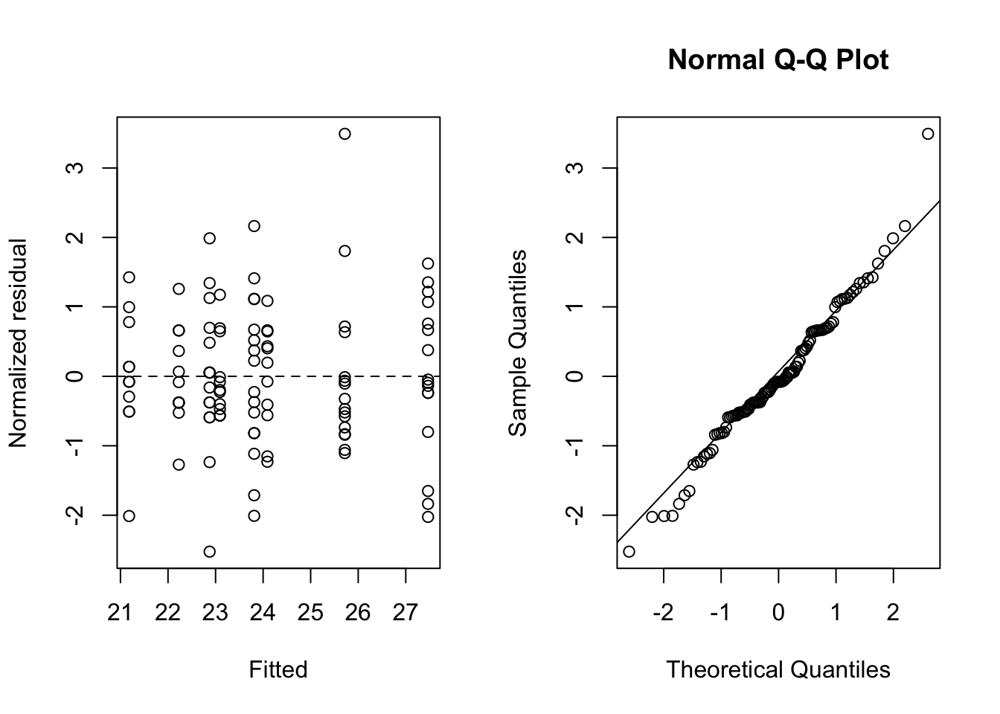

data("Orthodont", package = "nlme")
orth <- as.data.frame(Orthodont) |>
mutate(Subject = factor(Subject), age_f = factor(age))
with(orth, table(Sex, age_f)) age_f
Sex 8 10 12 14
Male 16 16 16 16
Female 11 11 11 11Repeated-measures ANOVA tests between-subject, within-subject time, and group-by-time effects under a structured univariate error model. The multivariate approach instead treats each occasion as a response component and tests profile parallelism, coincidence, and flatness without sphericity, but requires complete, commonly scheduled response vectors.
For group \(g\), subject \(i\), and occasion \(j\), \[ Y_{gij}=\mu+\alpha_g+\tau_j+(\alpha\tau)_{gj}+u_{gi}+e_{gij}. \] The univariate F test for within-subject effects requires \(C\Sigma C^{\mathsf T}=\sigma^2 I\) for an orthonormal within-subject contrast matrix \(C\). Profile hypotheses are \[ H_{\mathrm{parallel}}:C\mu_1=\cdots=C\mu_G,\quad H_{\mathrm{coincident}}:\mu_1=\cdots=\mu_G,\quad H_{\mathrm{flat}}:C\bar\mu=0. \]
Base aov() gives the classical split-plot ANOVA decomposition. car::Anova() applied to an mlm supplies multivariate tests and Greenhouse–Geisser/Huynh–Feldt corrected univariate tests. emmeans supplies estimable profile contrasts and multiplicity adjustments.
nlme::Orthodont is balanced at ages 8, 10, 12, and 14; the subject is Subject, the between-subject factor is Sex, and distance is continuous.
data("Orthodont", package = "nlme")
orth <- as.data.frame(Orthodont) |>
mutate(Subject = factor(Subject), age_f = factor(age))
with(orth, table(Sex, age_f)) age_f
Sex 8 10 12 14
Male 16 16 16 16
Female 11 11 11 11rm_aov <- aov(distance ~ Sex * age_f + Error(Subject / age_f), data = orth)
summary(rm_aov)
Error: Subject
Df Sum Sq Mean Sq F value Pr(>F)
Sex 1 140.5 140.46 9.292 0.00538 **
Residuals 25 377.9 15.12
---
Signif. codes: 0 '***' 0.001 '**' 0.01 '*' 0.05 '.' 0.1 ' ' 1
Error: Subject:age_f
Df Sum Sq Mean Sq F value Pr(>F)
age_f 3 237.19 79.06 40.032 1.49e-15 ***
Sex:age_f 3 13.99 4.66 2.362 0.0781 .
Residuals 75 148.13 1.98
---
Signif. codes: 0 '***' 0.001 '**' 0.01 '*' 0.05 '.' 0.1 ' ' 1orth_wide <- orth |>
select(Subject, Sex, age_f, distance) |>
pivot_wider(names_from = age_f, values_from = distance) |>
arrange(Subject)
Y <- as.matrix(orth_wide[c("8", "10", "12", "14")])
mlm_fit <- lm(Y ~ Sex, data = orth_wide)
idata <- data.frame(age_f = factor(c(8, 10, 12, 14)))
if (requireNamespace("car", quietly = TRUE)) {
rm_tests <- car::Anova(mlm_fit, idata = idata, idesign = ~age_f, type = 3)
summary(rm_tests, multivariate = TRUE) # Pillai, Wilks, Hotelling-Lawley, Roy
summary(rm_tests, multivariate = FALSE) # sphericity tests and GG/HF corrections
}
Univariate Type III Repeated-Measures ANOVA Assuming Sphericity
Sum Sq num Df Error SS den Df F value Pr(>F)
(Intercept) 59119 1 377.91 25 3910.8356 < 2.2e-16 ***
Sex 140 1 377.91 25 9.2921 0.005375 **
age_f 209 3 148.13 75 35.3473 2.397e-14 ***
Sex:age_f 14 3 148.13 75 2.3616 0.078058 .
---
Signif. codes: 0 '***' 0.001 '**' 0.01 '*' 0.05 '.' 0.1 ' ' 1
Mauchly Tests for Sphericity
Test statistic p-value
age_f 0.73533 0.20009
Sex:age_f 0.73533 0.20009
Greenhouse-Geisser and Huynh-Feldt Corrections
for Departure from Sphericity
GG eps Pr(>F[GG])
age_f 0.8672 9.803e-13 ***
Sex:age_f 0.8672 0.08777 .
---
Signif. codes: 0 '***' 0.001 '**' 0.01 '*' 0.05 '.' 0.1 ' ' 1
HF eps Pr(>F[HF])
age_f 0.976876 4.571448e-14
Sex:age_f 0.976876 7.966788e-02For two equally allocated groups and planned contrast \(c\), a normal-approximation calculation uses \(\operatorname{Var}(c^{\mathsf T}\bar Y_1-c^{\mathsf T}\bar Y_0)=4c^{\mathsf T}\Sigma c/N\), where \(N\) is total sample size.
Sigma_plan <- stats::cov(Y)
c_change <- c(-1, 0, 0, 1) # age-14 minus age-8 change
delta <- 2 # target difference in mean changes
alpha <- 0.05
power <- 0.80
N_total <- ceiling(
4 * drop(t(c_change) %*% Sigma_plan %*% c_change) *
(qnorm(1 - alpha / 2) + qnorm(power))^2 / delta^2
)
N_total + (N_total %% 2) # enforce equal allocation[1] 44The Sex:age_f test is the parallelism test; if rejected, report time-specific or change-specific contrasts rather than an average sex effect. Conditional on parallelism, the Sex test addresses coincidence and the age_f test addresses flatness. Greenhouse–Geisser and Huynh–Feldt results alter numerator/denominator degrees of freedom, whereas multivariate Pillai/Wilks tests do not impose sphericity.
stopifnot(!anyNA(Y), length(unique(orth$age_f)) == ncol(Y))
par(mfrow = c(1, 2))
plot(fitted(profile_gls), resid(profile_gls, type = "normalized"),
xlab = "Fitted", ylab = "Normalized residual")
abline(h = 0, lty = 2)
qqnorm(resid(profile_gls, type = "normalized")); qqline(resid(profile_gls, type = "normalized"))
par(mfrow = c(1, 1))For classical MANOVA, verify complete response vectors, common occasions, independent subjects, and adequate subjects relative to the number of occasions and groups.
aov() uses sequential sums of squares; term order matters in unbalanced designs. car::Anova(type = 3) requires deliberate contrasts and estimability checks.emmeans contrasts from gls use the fitted covariance model and are the idiomatic R analogue of SAS ESTIMATE/CONTRAST statements.car and emmeans implementations replace SAS GLM/MIXED syntax./Users/wenbinwu/Documents/UNC/26Spring/BIOS767/Lecture-Notes/BIOS-767-Part-005.pdf, pp. 7–14 and 24–39 (univariate RM-ANOVA and sphericity)./Users/wenbinwu/Documents/UNC/26Spring/BIOS767/Lecture-Notes/BIOS-767-Part-006.pdf, pp. 4–23 (MANOVA and profile tests)./Users/wenbinwu/Documents/UNC/26Spring/BIOS767/Lecture-Notes/anova-refitting.pdf, pp. 1–5 (Type I versus Type III tests and refitting)./Users/wenbinwu/Documents/UNC/26Spring/BIOS767/Assignments/Bios767 HW sol/HW3/PROGRAMS/03-HW3-Profile-Analysis.sas, lines 21–160 (profile analysis and unstructured covariance)./Users/wenbinwu/Documents/UNC/26Spring/BIOS767/Assignments/Bios767 HW sol/HW3/PROGRAMS/04-HW3-Trajectory-Analysis-Time.sas, lines 178–227 (parallelism contrasts and ML comparisons)./Users/wenbinwu/Documents/UW/25Winter/STAT571/notes/8.0 - Multivariate_Analysis_1_Testing.pdf, pp. 9–16 and 22–30 (multivariate test statistics)./Users/wenbinwu/Documents/UNC/26Spring/BIOS767/Lecture-Notes/BIOS-767-Part-022.pdf, pp. 4–23 (sample size/power for a continuous longitudinal contrast).